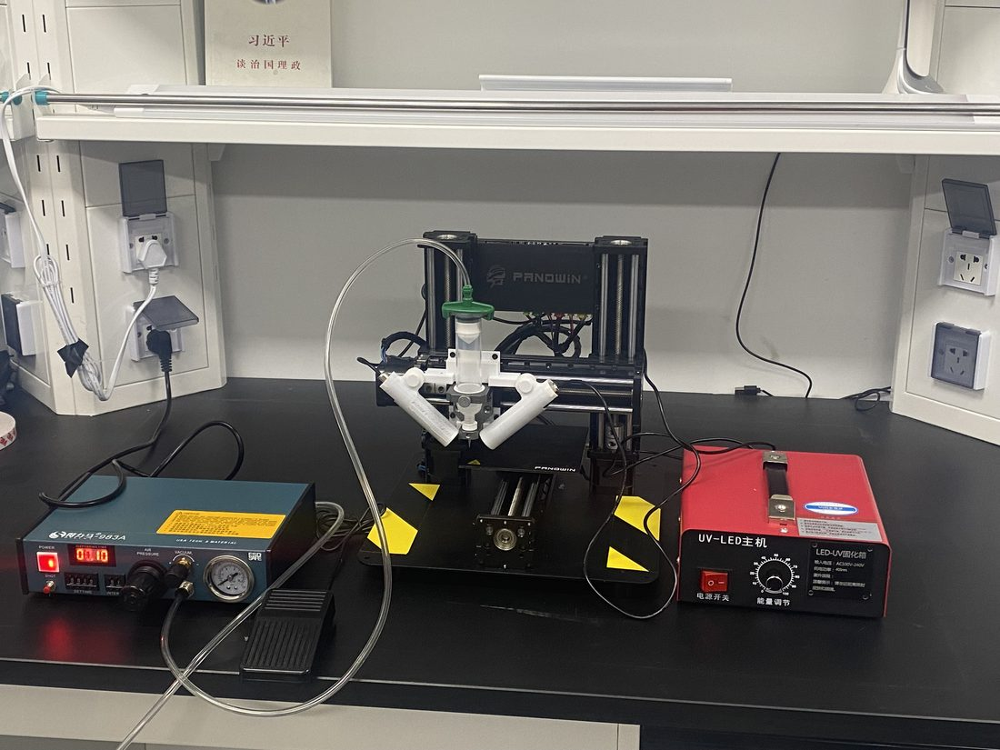
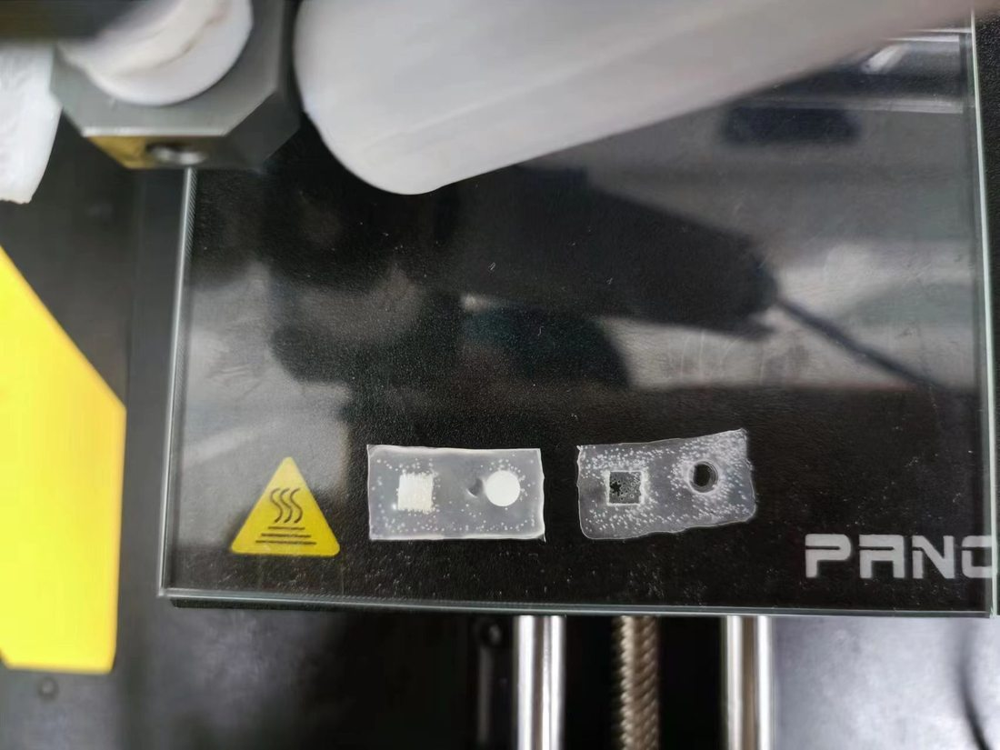
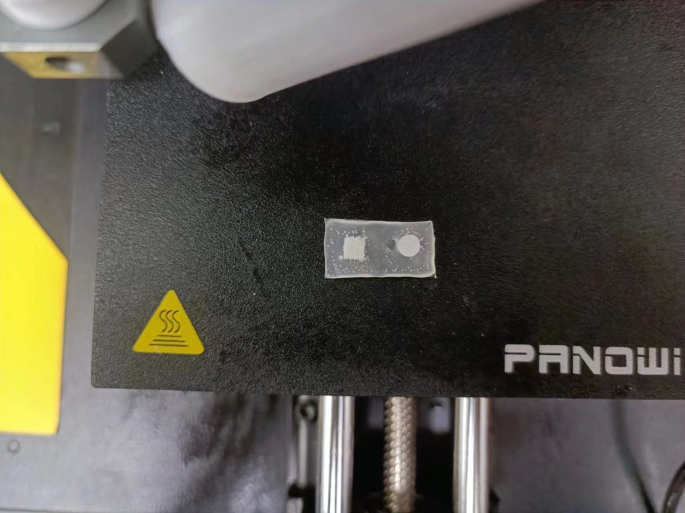

直写 3D 打印柔性电子"软-硬"界面封装Direct-write 3D-printed "Soft–Hard" Interface Packaging for Flexible Electronics
为柔性电子芯片做"软-硬"界面封装：用自编 G-code 控制改装的气压挤出式 3D 打印机，系统性优化 PDMS 复合材料配比、挤出气压与移动速度，实现对芯片的稳定螺旋包裹打印。Packaging the soft–hard interface of flexible-electronic chips: using custom G-code on a modified pneumatic-extrusion 3D printer, I systematically tuned PDMS composite ratio, extrusion pressure and travel speed to achieve stable spiral encapsulation of chips.
项目背景Background
柔性电子器件中刚性芯片与柔性基底之间存在"软-硬"界面，需要一层封装材料过渡保护。难点在于：材料既不能太稀（扩散）也不能太稠（挤不出），且固化方式与打印路径都需要工艺探索。Flexible electronics have a "soft–hard" interface between a rigid chip and a soft substrate, needing a transitional encapsulation layer. The challenge: the material must be neither too thin (it spreads) nor too thick (it won't extrude), and both curing method and print path require process exploration.
我的具体工作What I Did
- 打印系统搭建：用 Repetier-Host 控制打印机并独立控制热床温度；自编 G-code（G0/G1/F 等指令）实现自定义螺旋包裹轨迹。Print system: controlled the printer with Repetier-Host (independent bed-temperature control) and hand-wrote G-code (G0/G1/F) for custom spiral-encapsulation paths.
- 挤出装置改装：拆除原有喷头，用点胶机 + 气泵搭建可调气压的挤出装置，并设计支架固定针筒针头。Extruder retrofit: removed the original nozzle and built an adjustable-pressure extruder from a dispenser + air pump, with a custom bracket holding the syringe needle.
- 材料配比实验（核心）：系统对比 PDMS : 纳米二氧化硅 = 20:1 / 15:1 / 10:1，确定 15:1 粘稠度最佳；对挤出气压多次实验确定 3 psi 最稳定。Material-ratio experiments (core): compared PDMS : nano-silica at 20:1 / 15:1 / 10:1 and found 15:1 gives the best viscosity; repeated tests fixed extrusion at 3 psi for stable flow.
- 固化工艺探索：对比光固化 vs 热固化、边打边固化 vs 逐层固化，针对材料堆积问题提出"加快喷头速度 / 分区打印"方案，并用 G-code 温控实现逐层热固化兜底方案。Curing exploration: compared photo- vs thermal-curing and in-situ vs layer-by-layer curing; proposed "faster nozzle / zoned printing" to fix build-up, and used G-code temperature control as a layer-wise thermal-curing fallback.
成果与亮点Results & Highlights
- 在"单芯片、单层"条件下实现较完美的螺旋包裹封装打印。Achieved near-perfect spiral encapsulation in the single-chip, single-layer case.
- 确定关键工艺窗口：材料 15:1、挤出 3 psi，可复现稳定挤出。Identified the key process window—material 15:1, extrusion 3 psi—for reproducible, stable extrusion.
- 搭建从硬件（气压挤出）到软件（自编 G-code）到材料（配比）的完整工艺链路。Built a full process chain from hardware (pneumatic extrusion) to software (custom G-code) to materials (ratio).
打印过程演示视频Printing Demo Video
气压挤出式直写 3D 打印的实际打印过程。The pneumatic direct-ink-write 3D printing in action.
项目图片Gallery



点击图片可查看大图。Click an image to view full size.